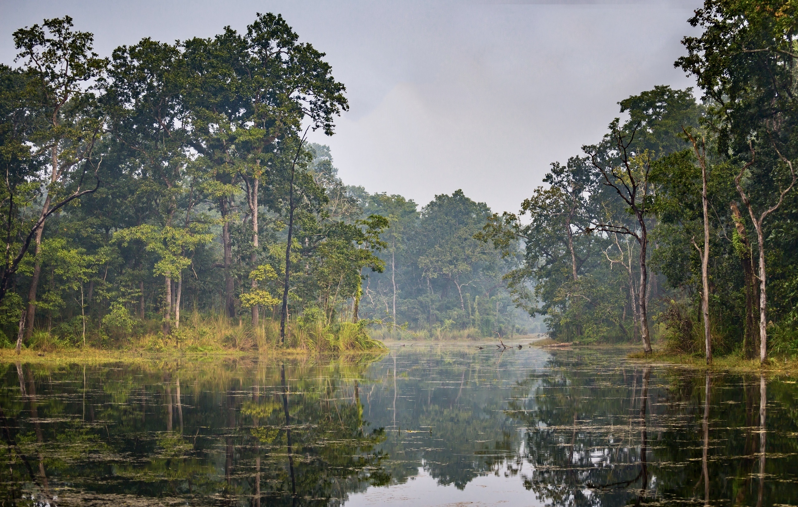

Samajik Mapwork
Home
Practice
Notes
About Us
Menu
Home
Practice
Notes
About Us
Practice Maps
Test your geographical knowledge with our interactive exercises
Mountains (हिमालहरू)
Highways (राजमार्गहरू)
Rivers (नदीहरू)

National Parks (राष्ट्रिय निकुञ्जहरू)
Production Areas (उत्पादन क्षेत्रहरू)
Religious Places (धार्मिक स्थलहरू)
Provinces (प्रदेशहरू)
Commercial centers (व्यापारीक केन्द्रहरू)